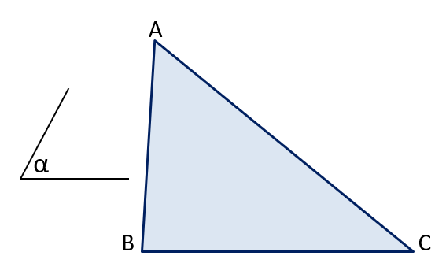
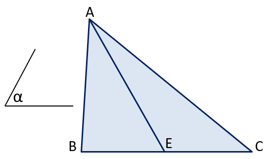
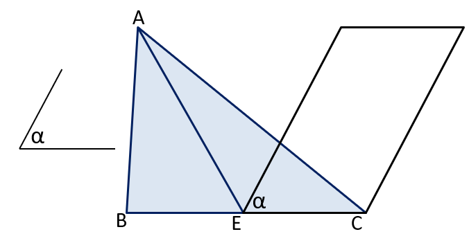
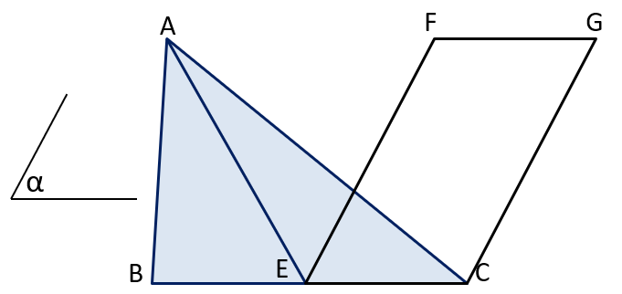

Let ABC be the given triangle and let ∠α be the given angle:
Let E be the point in the middle of B and C. Triangle ABE and AEC have the same area:
The base BE and EC are equal in length. We can make a parallelogram on the base EC with the angle at E being α, and with its opposite side at the same height as A:
We can call the top two corners F and G:
Triangles with the same width and height have the same area. That means triangles ABE and AEC have the same areas, which is half of ABC. Triangle FEC has the same area as AEC and ABE. Since FEC and FGC have the same area, then the area of the parallelogram FGEC is double that of FEC or FGC. So the area of the triangle ABC and parallelogram FGEC are the same, as both of them are double of ABE or FEC.